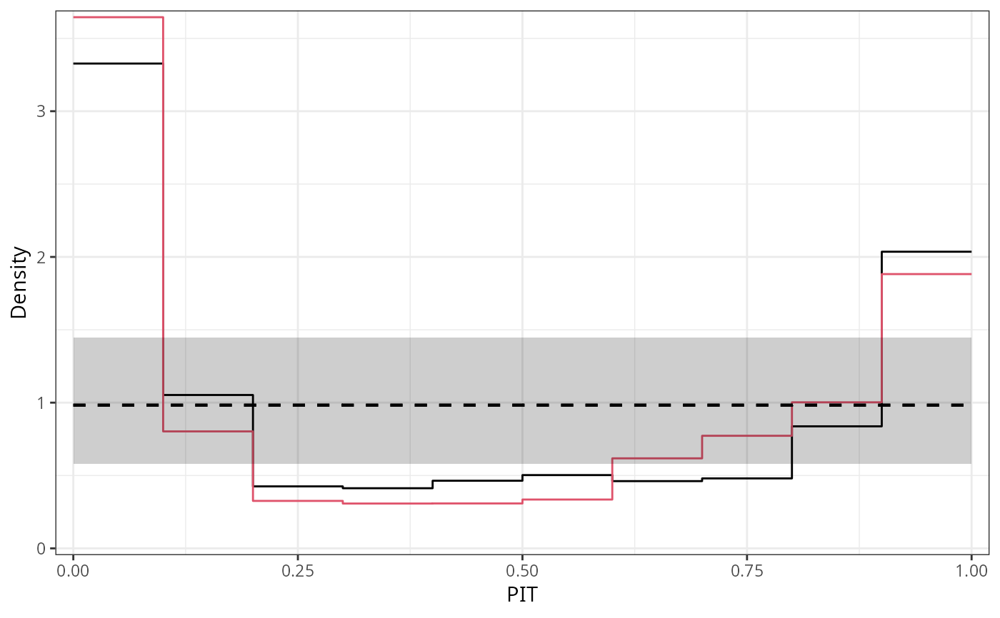
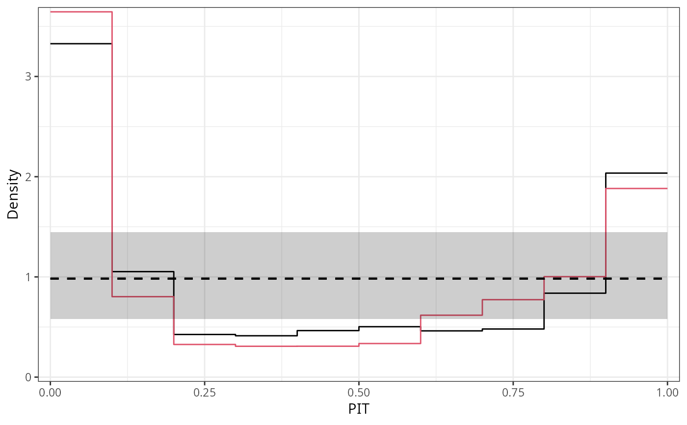

PIT Histograms for Assessing Goodness of Fit of Probability Models
pithist.RdProbability integral transform (PIT) histograms graphically
compare empirical probabilities from fitted models
with a uniform distribution. If plot = TRUE, the resulting object of
class "pithist" is plotted by plot.pithist or
autoplot.pithist depending on whether the
package ggplot2 is loaded, before the "pithist" object is returned.
pithist(object, ...)
# S3 method for default
pithist(
object,
newdata = NULL,
plot = TRUE,
class = NULL,
scale = c("uniform", "normal"),
breaks = NULL,
type = c("expected", "random"),
nsim = 1L,
delta = NULL,
simint = NULL,
simint_level = 0.95,
simint_nrep = 250,
style = c("bar", "line"),
freq = FALSE,
expected = TRUE,
confint = TRUE,
xlab = "PIT",
ylab = if (freq) "Frequency" else "Density",
main = NULL,
...
)Arguments
- object
an object from which probability integral transforms can be extracted using the generic function
procast.- ...
further graphical parameters forwarded to the plotting functions.
- newdata
an optional data frame in which to look for variables with which to predict. If omitted, the original observations are used.
- plot
logical or character. Should the
plotorautoplotmethod be called to draw the computed extended reliability diagram? LogicalFALSEwill suppress plotting,TRUE(default) will choose the type of plot conditional if the packageggplot2is loaded. Alternatively"base"or"ggplot2"can be specified to explicitly choose the type of plot.- class
should the invisible return value be either a
data.frameor atbl_df. Can be set to"data.frame"or"tibble"to explicitly specify the return class, or toNULL(default) in which case the return class is conditional on whether the package"tibble"is loaded.- scale
controls the scale on which the PIT residuals are computed: on the probability scale (
"uniform"; default) or on the normal scale ("normal").- breaks
NULL(default) or numeric to manually specify the breaks for the rootogram intervals. A single numeric (larger0) specifies the number of breaks to be automatically chosen, multiple numeric values are interpreted as manually specified breaks.- type
character. In case of discrete distributions, should an expected (non-normal) PIT histogram be computed according to Czado et al. (2009) (
"expected"; default) or should the PIT be drawn randomly from the corresponding interval ("random")?- nsim
positive integer, defaults to
1L. Only used whentype = "random"; how many simulated PITs should be drawn?- delta
NULLor numeric. The minimal difference to compute the range of probabilities corresponding to each observation to get (randomized) quantile residuals. ForNULL(default), the minimal observed difference in the response divided by5e-6is used.- simint
NULL(default) or logical. In case of discrete distributions, should the simulation (confidence) interval due to the randomization be visualized?- simint_level
numeric, defaults to
0.95. The confidence level required for calculating the simulation (confidence) interval due to the randomization.- simint_nrep
numeric, defaults to
250. The repetition number of simulated quantiles for calculating the simulation (confidence) interval due to the randomization.- style
character specifying plotting style. For
style = "bar"(default) a traditional PIT histogram is drawn,style = "line"solely plots the upper border of the bars. Ifsingle_graph = TRUEis used (seeplot.pithist), line-style PIT histograms will be enforced.- freq
logical. If
TRUE, the PIT histogram is represented by frequencies, thecountscomponent of the result; ifFALSE, probability densities, componentdensity, are plotted (so that the histogram has a total area of one).- expected
logical. Should the expected values be plotted as reference?
- confint
logical. Should confident intervals be drawn?
- xlab, ylab, main
graphical parameters passed to
plot.pithistorautoplot.pithist.
Value
An object of class "pithist" inheriting from
data.frame or tbl_df conditional on the argument classincluding the following variables:
- x
histogram interval midpoints on the x-axis,
- y
bottom coordinate of the histogram bars,
- width
widths of the histogram bars,
- confint_lwr
lower bound of the confidence interval,
- confint_upr
upper bound of the confidence interval,
- expected
y-coordinate of the expected curve.
Additionally, freq, xlab, ylab, main, and
confint_level are stored as attributes.
Details
PIT histograms graphically evaluate the probability integral transform (PIT),
i.e., the value that the predictive CDF attains at the observation, with a
uniform distribution. For a well calibrated model fit, the PIT will have a
standard uniform distribution.
For computation, pithist leverages the function
qresiduals employing the procast generic and then
essentially draws a hist.
In case of discrete distributions the PIT can be either drawn randomly from the corresponding interval or distributed proportionally in the histogram, whereby the latter is not yet supported.
In addition to the plot and autoplot method for
pithist objects, it is also possible to combine two (or more) PIT histograms by
c/rbind, which creates a set of PIT histograms that can then be
plotted in one go.
References
Agresti A, Coull AB (1998). “Approximate is Better than ``Exact'' for Interval Estimation of Binomial Proportions.” The American Statistician, 52(2), 119--126. doi:10.1080/00031305.1998.10480550
Czado C, Gneiting T, Held L (2009). “Predictive Model Assessment for Count Data.” Biometrics, 65(4), 1254--1261. doi:10.1111/j.1541-0420.2009.01191.x
Dawid AP (1984). “Present Position and Potential Developments: Some Personal Views: Statistical Theory: The Prequential Approach”, Journal of the Royal Statistical Society: Series A (General), 147(2), 278--292. doi:10.2307/2981683
Diebold FX, Gunther TA, Tay AS (1998). “Evaluating Density Forecasts with Applications to Financial Risk Management”. International Economic Review, 39(4), 863--883. doi:10.2307/2527342
Gneiting T, Balabdaoui F, Raftery AE (2007). “Probabilistic Forecasts, Calibration and Sharpness”. Journal of the Royal Statistical Society: Series B (Statistical Methodology). 69(2), 243--268. doi:10.1111/j.1467-9868.2007.00587.x
See also
Examples
## speed and stopping distances of cars
m1_lm <- lm(dist ~ speed, data = cars)
## compute and plot pithist
pithist(m1_lm)
 #-------------------------------------------------------------------------------
## determinants for male satellites to nesting horseshoe crabs
data("CrabSatellites", package = "countreg")
## linear poisson model
m1_pois <- glm(satellites ~ width + color, data = CrabSatellites, family = poisson)
m2_pois <- glm(satellites ~ color, data = CrabSatellites, family = poisson)
## compute and plot pithist as base graphic
p1 <- pithist(m1_pois, plot = FALSE)
p2 <- pithist(m2_pois, plot = FALSE)
## plot combined pithist as "ggplot2" graphic
ggplot2::autoplot(c(p1, p2), single_graph = TRUE, style = "line", col = c(1, 2))

#-------------------------------------------------------------------------------
## determinants for male satellites to nesting horseshoe crabs
data("CrabSatellites", package = "countreg")
## linear poisson model
m1_pois <- glm(satellites ~ width + color, data = CrabSatellites, family = poisson)
m2_pois <- glm(satellites ~ color, data = CrabSatellites, family = poisson)
## compute and plot pithist as base graphic
p1 <- pithist(m1_pois, plot = FALSE)
p2 <- pithist(m2_pois, plot = FALSE)
## plot combined pithist as "ggplot2" graphic
ggplot2::autoplot(c(p1, p2), single_graph = TRUE, style = "line", col = c(1, 2))
